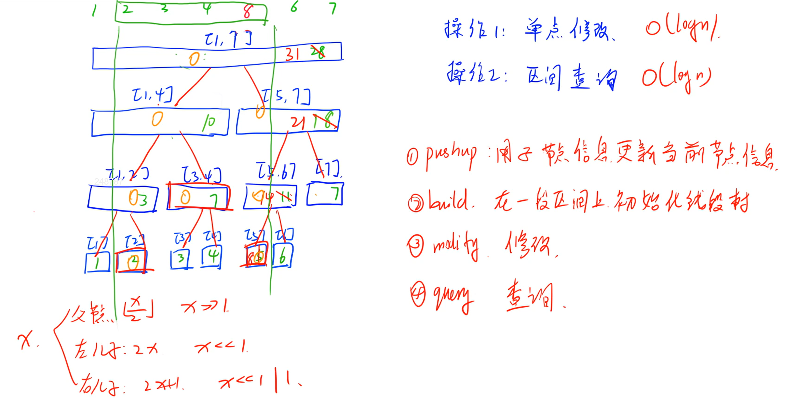
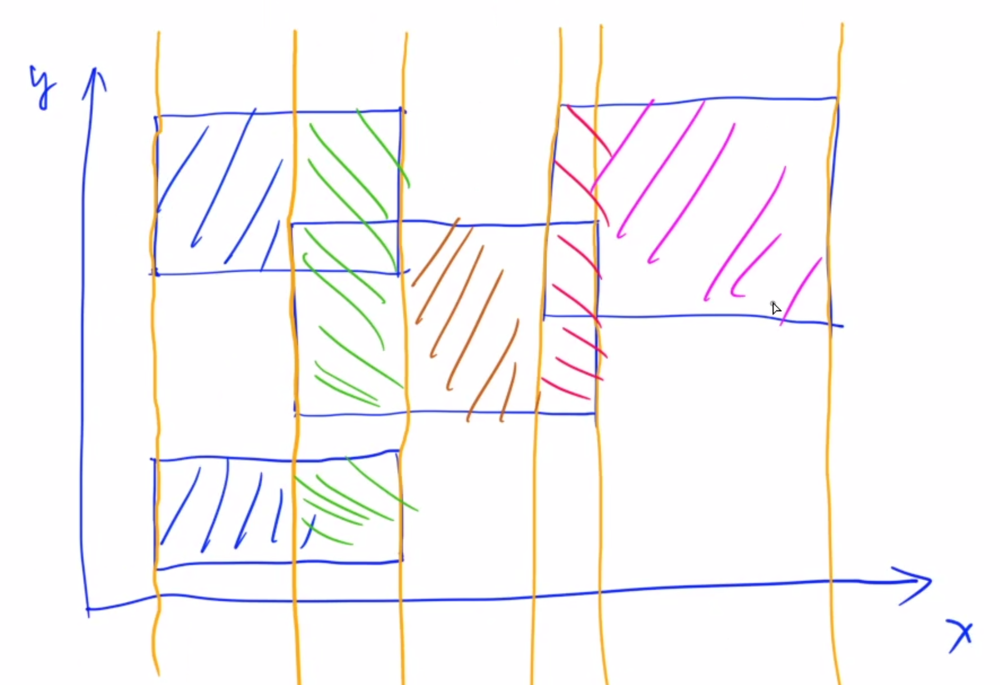
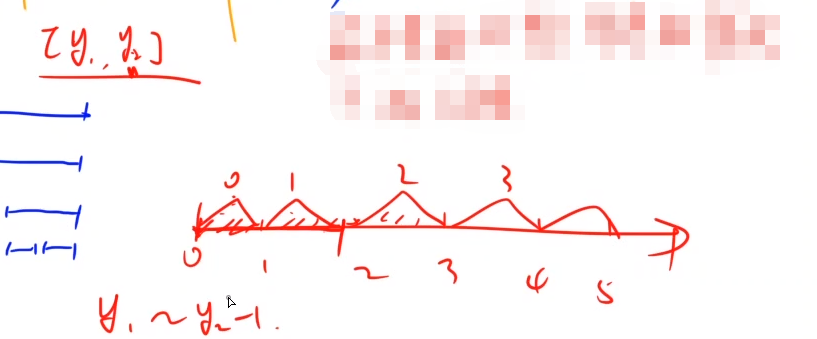
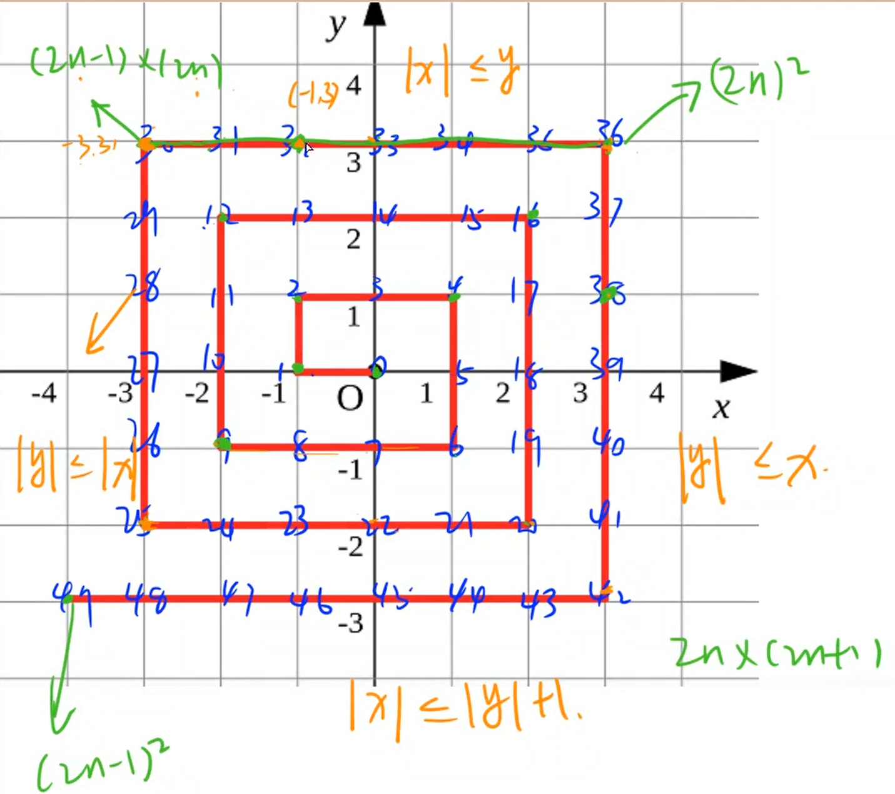

树状数组和线段树
树状数组
可以动态且快速地求前缀和
将序列中某个位置的数加上一个数——单点修改
求前缀和——区间查询
关于在线和离线：
在线做法是指支持修改
离线做法是指不支持修改


AcWing 1264. 动态求连续区间和
https://www.acwing.com/problem/content/1266/
给定 n 个数组成的一个数列，规定有两种操作，一是修改某个元素，二是求子数列 [a,b] 的连续和。
输入格式
第一行包含两个整数 n 和 m，分别表示数的个数和操作次数。
第二行包含 n 个整数，表示完整数列。
接下来 m 行，每行包含三个整数 k,a,b （k=0，表示求子数列[a,b]的和；k=1，表示第 a 个数加 b）。
数列从 1 开始计数。
输出格式
输出若干行数字，表示 k=0 时，对应的子数列 [a,b] 的连续和。
数据范围
1≤n≤100000 1≤m≤100000 1≤a≤b≤n 数据保证在任何时候，数列中所有元素之和均在 int 范围内。
输入样例：
110 521 2 3 4 5 6 7 8 9 1031 1 540 1 350 4 861 7 570 4 8
输出样例：
xxxxxxxxxx3111230335
x1
6using namespace std;7
8const int N = 100010;9
10int n, m;11int a[N], tr[N];12
13int lowbit(int x)14{15 return x & -x;16}17
18void add(int x, int v)19{20 for (int i = x; i <= n; i += lowbit(i)) tr[i] += v;21}22
23int query(int x)24{25 int res = 0;26 for (int i = x; i; i -= lowbit(i)) res += tr[i];27 return res;28}29
30int main()31{32 scanf("%d%d", &n, &m);33 for (int i = 1; i <= n; i ++ ) scanf("%d", &a[i]);34 for (int i = 1; i <= n; i ++ ) add(i, a[i]);35
36 while (m -- )37 {38 int k, x, y;39 scanf("%d%d%d", &k, &x, &y);40 if (k == 0) printf("%d\n", query(y) - query(x - 1));41 else add(x, y);42 }43
44 return 0;45}这道题如果是使用cin来读入的话会非常慢，一般情况下读入次数在一万次左右的时候就要使用scanf了
AcWing 1265. 数星星
https://www.acwing.com/problem/content/1267/
天空中有一些星星，这些星星都在不同的位置，每个星星有个坐标。
如果一个星星的左下方（包含正左和正下）有 k 颗星星，就说这颗星星是 k 级的。

例如，上图中星星 5 是 3 级的（1,2,4 在它左下），星星 2,4 是 1 级的。
例图中有 1 个 0 级，2 个 1 级，1 个 2 级，1 个 3 级的星星。
给定星星的位置，输出各级星星的数目。
换句话说，给定 N 个点，定义每个点的等级是在该点左下方（含正左、正下）的点的数目，试统计每个等级有多少个点。
输入格式
第一行一个整数 N，表示星星的数目；
接下来 N 行给出每颗星星的坐标，坐标用两个整数 x,y 表示；
不会有星星重叠。星星按 y 坐标增序给出，y 坐标相同的按 x 坐标增序给出。
输出格式
N 行，每行一个整数，分别是 0 级，1 级，2 级，……，N−1 级的星星的数目。
数据范围
1≤N≤15000 0≤x,y≤32000
输入样例：
xxxxxxxxxx61521 135 147 153 365 5
输出样例：
xxxxxxxxxx51122314150
xxxxxxxxxx411
6using namespace std;7
8const int N = 32010;9
10int n;11int tr[N], level[N];12
13int lowbit(int x){14 return x & -x;15}16
17void add(int x){18 for (int i = x; i < N; i += lowbit(i)) tr[i] ++ ;19}20
21int sum(int x)22{23 int res = 0;24 for (int i = x; i; i -= lowbit(i)) res += tr[i];25 return res;26}27
28int main()29{30 scanf("%d", &n);31 for (int i = 0; i < n; i ++ )32 {33 int x, y;34 scanf("%d%d", &x, &y);35 x ++ ;36 level[sum(x)] ++ ;37 add(x);38 }39 for (int i = 0; i < n; i ++ ) printf("%d\n", level[i]);40 return 0;41}形象解释下为什么是 i<N ？
因为：回想一下这个树状数组的结构，最终的节点应该是最右上角的值，如果是n的话 n这个节点不一定处于最右上角，其实也可以取横坐标最大的点的正上方的点，为了保险起见，直接取N了
AcWing 1215. 小朋友排队
https://www.acwing.com/problem/content/1217/
n 个小朋友站成一排。
现在要把他们按身高从低到高的顺序排列，但是每次只能交换位置相邻的两个小朋友。
每个小朋友都有一个不高兴的程度。开始的时候，所有小朋友的不高兴程度都是 0。
如果某个小朋友第一次被要求交换，则他的不高兴程度增加 1，如果第二次要求他交换，则他的不高兴程度增加 2（即不高兴程度为 3），依次类推。当要求某个小朋友第 k 次交换时，他的不高兴程度增加 k。
请问，要让所有小朋友按从低到高排队，他们的不高兴程度之和最小是多少。
如果有两个小朋友身高一样，则他们谁站在谁前面是没有关系的。
输入格式
输入的第一行包含一个整数 n，表示小朋友的个数。第二行包含 n 个整数 H1,H2,…,Hn，分别表示每个小朋友的身高。
输出格式
输出一行，包含一个整数，表示小朋友的不高兴程度和的最小值。
数据范围
1≤n≤100000,0≤Hi≤1000000
输入样例：
xxxxxxxxxx21323 2 1
输出样例：
xxxxxxxxxx119
样例解释
首先交换身高为3和2的小朋友，再交换身高为3和1的小朋友，再交换身高为2和1的小朋友，每个小朋友的不高兴程度都是3，总和为9。
xxxxxxxxxx401
3using namespace std;4typedef long long int LL;5const int N = 1e6 + 10;6int n, h[N], tr[N], sum[N];7
8int lowbit(int x) {9 return x & -x;10}11
12void add(int x) {13 for (int i = x; i < N; i += lowbit(i)) tr[i] += 1;14}15
16int query(int x) {17 int res = 0;18 for (int i = x; i; i -= lowbit(i)) {19 res += tr[i];20 }21 return res;22}23
24int main() {25 cin >> n;26 for (int i = 0; i < n; ++i) scanf("%d", &h[i]), h[i]++;27 for (int i = 0; i < n; ++i) {28 sum[i] += query(N - 1) - query(h[i]);29 add(h[i]);30 }31 memset(tr, 0, sizeof tr);32 for (int i = n - 1; i >= 0; --i) {33 sum[i] += query(h[i] - 1);34 add(h[i]);35 }36 LL res = 0;37 for (int i = 0; i < n; ++i) res += (LL) (1 + sum[i]) * sum[i] / 2;38 cout << res;39 return 0;40}这个题实际上是逆序对，只不过稍稍变形，我们来看对于每个数来说他的逆序对怎么算，在这个数之前比这个数大的数+这个数之后比这个数小的数就是这个数的逆序对的个数（好绕口。。。慢慢体会）。这个逆序对个数其实代表了该数换位置的次数。
每次读入一个数就先把它放到树状数组中去，但这个树状数组保存的并不是这个数，而是这个数出现的次数
只要明白了这个道理就很简单了，放入完毕后，我们就去query一下这个数之前有多少个比他小的数，然后用当前数组长度减去比这个数小的数就是比这个数大的数的个数了（算比这个数大的个数）。比当前数靠后的且别当数小的数求法就是把这个树状数组给倒过来求一遍。
线段树

AcWing 1264. 动态求连续区间和
https://www.acwing.com/problem/content/1266/
给定 n 个数组成的一个数列，规定有两种操作，一是修改某个元素，二是求子数列 [a,b] 的连续和。
输入格式
第一行包含两个整数 n 和 m，分别表示数的个数和操作次数。
第二行包含 n 个整数，表示完整数列。
接下来 m 行，每行包含三个整数 k,a,b （k=0，表示求子数列[a,b]的和；k=1，表示第 a 个数加 b）。
数列从 1 开始计数。
输出格式
输出若干行数字，表示 k=0 时，对应的子数列 [a,b] 的连续和。
数据范围
1≤n≤100000 1≤m≤100000 1≤a≤b≤n 数据保证在任何时候，数列中所有元素之和均在 int 范围内。
输入样例：
xxxxxxxxxx7110 521 2 3 4 5 6 7 8 9 1031 1 540 1 350 4 861 7 570 4 8
输出样例：
xxxxxxxxxx3111230335
xxxxxxxxxx621
6using namespace std;7
8const int N = 100010;9
10int n, m;11int w[N];12struct Node {13 int l, r;14 int sum;15} tr[N * 4];16
17void pushup(int u) {18 tr[u].sum = tr[u << 1].sum + tr[u << 1 | 1].sum;19}20
21void build(int u, int l, int r) {22 if (l == r) tr[u] = {l, r, w[r]};23 else {24 tr[u] = {l, r};25 int mid = l + r >> 1;26 build(u << 1, l, mid), build(u << 1 | 1, mid + 1, r);27 pushup(u);28 }29}30
31int query(int u, int l, int r) {32 if (tr[u].l >= l && tr[u].r <= r) return tr[u].sum;33 int mid = tr[u].l + tr[u].r >> 1;34 int sum = 0;35 if (l <= mid) sum = query(u << 1, l, r);36 if (r > mid) sum += query(u << 1 | 1, l, r);37 return sum;38}39
40void modify(int u, int x, int v) {41 if (tr[u].l == tr[u].r) tr[u].sum += v;42 else {43 int mid = tr[u].l + tr[u].r >> 1;44 if (x <= mid) modify(u << 1, x, v);45 else modify(u << 1 | 1, x, v);46 pushup(u);47 }48}49
50int main() {51 scanf("%d%d", &n, &m);52 for (int i = 1; i <= n; i++) scanf("%d", &w[i]);53 build(1, 1, n);54
55 int k, a, b;56 while (m--) {57 scanf("%d%d%d", &k, &a, &b);58 if (k == 0) printf("%d\n", query(1, a, b));59 else modify(1, a, b);60 }61 return 0;62}
AcWing 1270. 数列区间最大值
输入一串数字，给你 M 个询问，每次询问就给你两个数字 X,Y，要求你说出 X 到 Y 这段区间内的最大数。
输入格式
第一行两个整数 N,M 表示数字的个数和要询问的次数；接下来一行为 N 个数；接下来 M 行，每行都有两个整数 X,Y。
输出格式
输出共 M 行，每行输出一个数。
数据范围
1≤N≤105,1≤M≤106,1≤X≤Y≤N, 数列中的数字均不超过231−1
输入样例：
xxxxxxxxxx4110 223 2 4 5 6 8 1 2 9 731 443 8
输出样例：
xxxxxxxxxx21528
xxxxxxxxxx411
3using namespace std;4
5const int N = 1e5 + 10;6int n, m, w[N];7struct node {8 int l, r, maxx;9} tr[N * 4];10
11void build(int u, int l, int r) {12 if (l == r) tr[u] = {l, r, w[l]};13 else {14 tr[u] = {l, r};15 int mid = l + r >> 1;16 build(u << 1, l, mid);17 build(u << 1 | 1, mid + 1, r);18 tr[u].maxx = max(tr[u << 1].maxx, tr[u << 1 | 1].maxx);19 }20}21
22int query(int u, int l, int r) {23 if (l <= tr[u].l && tr[u].r <= r) return tr[u].maxx;24 int mid = tr[u].l + tr[u].r >> 1;25 int maxx = INT_MIN;26 if (l <= mid) maxx = max(maxx, query(u << 1, l, r));27 if (r >= mid + 1) maxx = max(maxx, query(u << 1 | 1, l, r));28 return maxx;29}30
31int main() {32 cin >> n >> m;33 for (int i = 1; i <= n; ++i) scanf("%d", &w[i]);34 build(1, 1, n);35 int a, b;36 while (m--) {37 scanf("%d%d", &a, &b);38 printf("%d\n", query(1, a, b));39 }40 return 0;41}利用线段树维护区间最大值
AcWing 1228. 油漆面积
https://www.acwing.com/problem/content/1230/
X星球的一批考古机器人正在一片废墟上考古。
该区域的地面坚硬如石、平整如镜。
管理人员为方便，建立了标准的直角坐标系。
每个机器人都各有特长、身怀绝技。
它们感兴趣的内容也不相同。
经过各种测量，每个机器人都会报告一个或多个矩形区域，作为优先考古的区域。
矩形的表示格式为 (x1,y1,x2,y2)，代表矩形的两个对角点坐标。
为了醒目，总部要求对所有机器人选中的矩形区域涂黄色油漆。
小明并不需要当油漆工，只是他需要计算一下，一共要耗费多少油漆。
其实这也不难，只要算出所有矩形覆盖的区域一共有多大面积就可以了。
注意，各个矩形间可能重叠。
输入格式
第一行，一个整数 n，表示有多少个矩形。接下来的 n 行，每行有 4 个整数 x1,y1,x2,y2，空格分开，表示矩形的两个对角顶点坐标。
输出格式
一行一个整数，表示矩形覆盖的总面积。
数据范围
1≤n≤10000,0≤x1,x2,y2,y2≤10000 数据保证 x1<x2 且 y1<y2。
输入样例1：
xxxxxxxxxx41321 5 10 1033 1 20 2042 7 15 17
输出样例1：
xxxxxxxxxx11340
输入样例2：
xxxxxxxxxx41325 2 10 632 7 12 1048 1 15 15
输出样例2：
xxxxxxxxxx11128
xxxxxxxxxx671
6using namespace std;7const int N = 10010;8int n;9
10struct Segment {11 int x, y1, y2;12 int k;13
14 bool operator<(const Segment &t) const {15 return x < t.x;16 }17} seg[N * 2];18
19struct Node {20 int l, r;21 int cnt, len;22} tr[N * 4];23
24void pushup(int u) {25 if (tr[u].cnt > 0) tr[u].len = tr[u].r - tr[u].l + 1;26 else if (tr[u].l == tr[u].r) tr[u].len = 0;27 else tr[u].len = tr[u << 1].len + tr[u << 1 | 1].len;28}29
30void build(int u, int l, int r) {31 tr[u] = {l, r};32 if (l == r) return;33 int mid = l + r >> 1;34 build(u << 1, l, mid), build(u << 1 | 1, mid + 1, r);35}36
37void modify(int u, int l, int r, int k) {38 if (tr[u].l >= l && tr[u].r <= r) {39 tr[u].cnt += k;40 pushup(u);41 } else {42 int mid = tr[u].l + tr[u].r >> 1;43 if (l <= mid) modify(u << 1, l, r, k);44 if (r > mid) modify(u << 1 | 1, l, r, k);45 pushup(u);46 }47}48
49int main() {50 scanf("%d", &n);51 int m = 0;52 for (int i = 0; i < n; i++) {53 int x1, y1, x2, y2;54 scanf("%d%d%d%d", &x1, &y1, &x2, &y2);55 seg[m++] = {x1, y1, y2, 1};56 seg[m++] = {x2, y1, y2, -1};57 }58 sort(seg, seg + m);59 build(1, 0, 10000);60 int res = 0;61 for (int i = 0; i < m; i++) {62 if (i > 0) res += tr[1].len * (seg[i].x - seg[i - 1].x);63 modify(1, seg[i].y1, seg[i].y2 - 1, seg[i].k);64 }65 printf("%d\n", res);66 return 0;67}扫描线套路： 从每个矩形的竖边，都做一条垂直的线 画完竖线之后统计面积 统计面积的方法：以每个柱形区域为单位来统计，如下图，每个颜色代表一个柱形区域

每个柱形区域的面积就是这个长条的宽度×阴影部分高度
宽度就是柱形两边竖线的横坐标之差，设右边竖线横坐标为xj，左边竖线横坐标为xi，则宽度为xj−xi
那么现在的问题就变成了：如何快速统计出来每个区间内部阴影部分的高度h？
这就需要用到一个非常特殊的线段树了，之所以称之为“非常特殊”是因为这个做法比较难扩展，只适用于这一类题型。
线段树中的每个结点struct Node除了存储左右边间l, r，还要存储一个cnt，表示当前区间被覆盖的次数，
还有一个len，表示至少被覆盖一次的区间的总长度。这也就是说，当cnt=0时，len可能会表示当前区间的子区间被覆盖的长度。
另外，扫描线题型会用到懒标记延迟更新的思想，然后这类题型特殊的地方就是它的懒标记不更新，即不往下传（懒标记是pushdown操作，用父结点的信息更新子节点的信息）。

那么我们现在再看一下它的每个标记真实的含义是什么，以及它的每个子节点的信息有什么特点。
cnt、len标记存的是在不考虑父结点信息情况下的结果。
这两个标记不考虑上面的父结点信息，只考虑下面的子节点信息，这就是扫描线的特殊之处。
AcWing 1237. 螺旋折线
这个题是个找规律的题目，不知道为什么在线段树的部分
https://www.acwing.com/problem/content/1239/
如下图所示的螺旋折线经过平面上所有整点恰好一次。

对于整点 (X,Y)，我们定义它到原点的距离 dis(X,Y) 是从原点到 (X,Y) 的螺旋折线段的长度。
例如 dis(0,1)=3,dis(−2,−1)=9
给出整点坐标 (X,Y)，你能计算出 dis(X,Y) 吗？
输入格式
包含两个整数 X,Y。
输出格式
输出一个整数，表示 dis(X,Y)。
数据范围
−109≤X,Y≤109
输入样例：
xxxxxxxxxx110 1
输出样例：
xxxxxxxxxx113
方法一
xxxxxxxxxx291
4using namespace std;5
6typedef long long LL;7
8int main() {9 int x, y;10 cin >> x >> y;11 if (abs(x) <= y) // 在上方12 {13 int n = y;14 cout << (LL) (2 * n - 1) * (2 * n) + x - (-n) << endl;15 } else if (abs(y) <= x) // 在右方16 {17 int n = x;18 cout << (LL) (2 * n) * (2 * n) + n - y << endl;19 } else if (abs(x) <= abs(y) + 1 && y < 0) // 在下方20 {21 int n = abs(y);22 cout << (LL) (2 * n) * (2 * n + 1) + n - x << endl;23 } else // 在左方24 {25 int n = abs(x);26 cout << (LL) (2 * n - 1) * (2 * n - 1) + y - (-n + 1) << endl;27 }28 return 0;29}
方法二
xxxxxxxxxx121
3using namespace std;4
5int main() {6 long long x, y;7 cin >> x >> y;8 long long k = max(abs(x), abs(y));9 if (x >= y) cout << 4 * k * k + abs(x - k) + abs(y - k) << endl;10 else cout << 4 * k * k - abs(x - k) - abs(y - k) << endl;11 return 0;12}找规律可以发现每层的右上角点所需步数为为4k2，求任意一个点的dis首先找到这个点所在的层数
如果在该层的左或上则减去该点到右上角曼哈顿距离
如果在该层的右或下则加上该点到右上角曼哈顿距离
双指针
AcWing 1238. 日志统计
https://www.acwing.com/problem/content/1240/
小明维护着一个程序员论坛。现在他收集了一份”点赞”日志，日志共有 NN 行。
其中每一行的格式是：
xxxxxxxxxx11ts id
表示在 ts 时刻编号 id 的帖子收到一个”赞”。
现在小明想统计有哪些帖子曾经是”热帖”。
如果一个帖子曾在任意一个长度为 D 的时间段内收到不少于 K 个赞，小明就认为这个帖子曾是”热帖”。
具体来说，如果存在某个时刻 T 满足该帖在 [T,T+D) 这段时间内(注意是左闭右开区间)收到不少于 K 个赞，该帖就曾是”热帖”。
给定日志，请你帮助小明统计出所有曾是”热帖”的帖子编号。
输入格式
第一行包含三个整数 N,D,K
以下 N 行每行一条日志，包含两个整数 ts 和 id。
输出格式
按从小到大的顺序输出热帖 id。
每个 id 占一行。
数据范围
1≤K≤N≤105 0≤ts,id≤105 1≤D≤10000
输入样例：
xxxxxxxxxx817 10 220 130 10410 10510 169 17100 38100 3
输出样例：
xxxxxxxxxx21123
xxxxxxxxxx351
3using namespace std;4const int N = 1e5 + 10;5typedef pair<int, int> PII;6
7PII logs[N];8int k, n, d;9int cnt[N];10bool st[N];11
12int main() {13 cin >> n >> d >> k;14
15 for (int i = 0; i < n; i++) scanf("%d%d", &logs[i].first, &logs[i].second);16
17 sort(logs, logs + n);18
19 for (int i = 0, j = 0; i < n; ++i) {20
21 int id = logs[i].second;22 cnt[id]++;23
24 while (logs[i].first - logs[j].first >= d) {25 cnt[logs[j].second]--;26 ++j;27 }28
29 if (cnt[id] >= k) st[id] = true;30 }31
32 int res = 0;33 for (int i = 0; i < 1e5 + 8; i++) if (st[i]) printf("%d\n", i);34 return 0;35}注意体会双指针怎么样维护一个动态的区间
AcWing 1240. 完全二叉树的权值
https://www.acwing.com/problem/content/1242/
给定一棵包含 N 个节点的完全二叉树，树上每个节点都有一个权值，按从上到下、从左到右的顺序依次是 A1,A2,⋅⋅⋅AN，如下图所示：

现在小明要把相同深度的节点的权值加在一起，他想知道哪个深度的节点权值之和最大？
如果有多个深度的权值和同为最大，请你输出其中最小的深度。
注：根的深度是 1。
输入格式
第一行包含一个整数 N。
第二行包含 N 个整数 A1,A2,⋅⋅⋅AN
输出格式
输出一个整数代表答案。
数据范围
1≤N≤105 −105≤Ai≤105
输入样例：
xxxxxxxxxx21721 6 5 4 3 2 1
输出样例：
xxxxxxxxxx112
自己写的
虽然是双指针的题目，但是这个写法并没有利用双指针
xxxxxxxxxx341
3using namespace std;4typedef long long LL;5
6const int N = 1e5 + 10;7
8int a[N];9int n;10
11int main() {12 cin >> n;13 for (int i = 0; i < n; i++) scanf("%d", &a[i]);14
15 LL most = -1e18;16 int ans = 0;17 int k = 1;18 int ceng = 0;19 for (int i = 0; i < n;) {20 LL temp = 0;21 while (i < n && i < k) {22 temp += a[i];23 ++i;24 }25 ceng++;26 if (most < temp) {27 ans = ceng;28 most = temp;29 }30 k = (1 + k) * 2 - 1;31 }32 cout << ans;33 return 0;34}注意数据大小，这个题还是会爆 int 需要强制类型转换
log（） 函数和 pow（）函数的精度不够，建议尽量不要涉及到浮点数计算
BFS
队列→先进先出 对应 BFS
栈→后进先出 用来解决类似递归的问题，计算机是怎么线性处理递归问题的？实际上就是利用栈来处理
AcWing 1101. 献给阿尔吉侬的花束
https://www.acwing.com/problem/content/1103/
阿尔吉侬是一只聪明又慵懒的小白鼠，它最擅长的就是走各种各样的迷宫。
今天它要挑战一个非常大的迷宫，研究员们为了鼓励阿尔吉侬尽快到达终点，就在终点放了一块阿尔吉侬最喜欢的奶酪。
现在研究员们想知道，如果阿尔吉侬足够聪明，它最少需要多少时间就能吃到奶酪。
迷宫用一个 R×C 的字符矩阵来表示。
字符 S 表示阿尔吉侬所在的位置，字符 E 表示奶酪所在的位置，字符 # 表示墙壁，字符 . 表示可以通行。
阿尔吉侬在 1 个单位时间内可以从当前的位置走到它上下左右四个方向上的任意一个位置，但不能走出地图边界。
输入格式
第一行是一个正整数 T，表示一共有 T 组数据。
每一组数据的第一行包含了两个用空格分开的正整数 R 和 C，表示地图是一个 R×C 的矩阵。
接下来的 R 行描述了地图的具体内容，每一行包含了 C 个字符。字符含义如题目描述中所述。保证有且仅有一个 S 和 E。
输出格式
对于每一组数据，输出阿尔吉侬吃到奶酪的最少单位时间。
若阿尔吉侬无法吃到奶酪，则输出“oop!”（只输出引号里面的内容，不输出引号）。
每组数据的输出结果占一行。
数据范围
1<T≤10 2≤R,C≤200
输入样例：
xxxxxxxxxx131323 43.S..4###.5..E.63 47.S..8.E..9....103 411.S..12####13..E.
输出样例：
xxxxxxxxxx315213oop!
xxxxxxxxxx741
7
10using namespace std;11
12typedef pair<int, int> PII;13
14const int N = 210;15
16int n, m;17char g[N][N];18int dist[N][N];19
20int bfs(PII start, PII end)21{22 queue<PII> q;23 memset(dist, -1, sizeof dist);24
25 dist[start.x][start.y] = 0;26 q.push(start);27
28 int dx[4] = {-1, 0, 1, 0}, dy[4] = {0, 1, 0, -1};29
30 while (q.size())31 {32 auto t = q.front();33 q.pop();34
35 for (int i = 0; i < 4; i ++ )36 {37 int x = t.x + dx[i], y = t.y + dy[i];38 if (x < 0 || x >= n || y < 0 || y >= m) continue; // 出界39 if (g[x][y] == '#') continue; // 障碍物40 if (dist[x][y] != -1) continue; // 之前已经遍历过41
42 dist[x][y] = dist[t.x][t.y] + 1;43
44 if (end == make_pair(x, y)) return dist[x][y];45
46 q.push({x, y});47 }48 }49
50 return -1;51}52
53int main()54{55 int T;56 scanf("%d", &T);57 while (T -- )58 {59 scanf("%d%d", &n, &m);60 for (int i = 0; i < n; i ++ ) scanf("%s", g[i]);61
62 PII start, end;63 for (int i = 0; i < n; i ++ )64 for (int j = 0; j < m; j ++ )65 if (g[i][j] == 'S') start = {i, j};66 else if (g[i][j] == 'E') end = {i, j};67
68 int distance = bfs(start, end);69 if (distance == -1) puts("oop!");70 else printf("%d\n", distance);71 }72
73 return 0;74}
AcWing 1113. 红与黑
https://www.acwing.com/problem/content/1115/
有一间长方形的房子，地上铺了红色、黑色两种颜色的正方形瓷砖。
你站在其中一块黑色的瓷砖上，只能向相邻（上下左右四个方向）的黑色瓷砖移动。
请写一个程序，计算你总共能够到达多少块黑色的瓷砖。
输入格式
输入包括多个数据集合。
每个数据集合的第一行是两个整数 W 和 H，分别表示 x 方向和 y 方向瓷砖的数量。
在接下来的 H 行中，每行包括 W 个字符。每个字符表示一块瓷砖的颜色，规则如下
1）‘.’：黑色的瓷砖； 2）‘#’：红色的瓷砖； 3）‘@’：黑色的瓷砖，并且你站在这块瓷砖上。该字符在每个数据集合中唯一出现一次。
当在一行中读入的是两个零时，表示输入结束。
输出格式
对每个数据集合，分别输出一行，显示你从初始位置出发能到达的瓷砖数(记数时包括初始位置的瓷砖)。
数据范围
1≤W,H≤20
输入样例：
xxxxxxxxxx1116 92....#.3.....#4......5......6......7......8......9#@...#10.#..#.110 0
输出样例：
xxxxxxxxxx1145
洪水灌溉算法
xxxxxxxxxx621
3using namespace std;4typedef pair<int, int> PII;5
6const int N = 23;7
8char g[N][N];9bool st[N][N];10int n, m;11int cnt;12PII start;13
14void bfs() {15 int dx[4] = {0, 0, 1, -1};16 int dy[4] = {1, -1, 0, 0};17
18 queue<PII> q;19 st[start.first][start.second] = true;20 q.push(start);21 cnt++;22
23 while (q.size()) {24 auto t = q.front();25 q.pop();26
27 for (int i = 0; i < 4; ++i) {28 int x = t.first + dx[i], y = t.second + dy[i];29 if (x < 0 || y < 0 || x >= n || y >= m) continue;30 if (!st[x][y]) {31 cnt++;32 st[x][y] = true;33 q.push({x, y});34 }35 }36 }37 return;38}39
40int main() {41 cin >> m >> n;42 while (m && n) {43 for (int i = 0; i < n; i++) scanf("%s", g[i]);44
45 for (int i = 0; i < n; i++)46 for (int j = 0; j < m; j++) {47 if (g[i][j] == '#') {48 st[i][j] = true;49 } else if (g[i][j] == '@') start = {i, j};50 }51 bfs();52
53 cout << cnt << endl;54 55 cnt = 0;56 memset(st, false, sizeof st);57 memset(g, 0, sizeof g);58 59 cin >> m >> n;60 }61 return 0;62}多组测试数据的时候一定要记得利用 memset 函数重置相关数组的值
AcWing 1096. 地牢大师
https://www.acwing.com/problem/content/1098/
你现在被困在一个三维地牢中，需要找到最快脱离的出路！
地牢由若干个单位立方体组成，其中部分不含岩石障碍可以直接通过，部分包含岩石障碍无法通过。
向北，向南，向东，向西，向上或向下移动一个单元距离均需要一分钟。
你不能沿对角线移动，迷宫边界都是坚硬的岩石，你不能走出边界范围。
请问，你有可能逃脱吗？
如果可以，需要多长时间？
输入格式
输入包含多组测试数据。
每组数据第一行包含三个整数 L,R,C 分别表示地牢层数，以及每一层地牢的行数和列数。
接下来是 L 个 R 行 C 列的字符矩阵，用来表示每一层地牢的具体状况。
每个字符用来描述一个地牢单元的具体状况。
其中, 充满岩石障碍的单元格用”#”表示，不含障碍的空单元格用”.”表示，你的起始位置用”S”表示，终点用”E”表示。
每一个字符矩阵后面都会包含一个空行。
当输入一行为”0 0 0”时，表示输入终止。
输出格式
每组数据输出一个结果，每个结果占一行。
如果能够逃脱地牢，则输出”Escaped in x minute(s).”，其中X为逃脱所需最短时间。
如果不能逃脱地牢，则输出”Trapped!”。
数据范围
1≤L,R,C≤100
输入样例：
xxxxxxxxxx2213 4 52S....3.###.4.##..5###.#6#####8#####9##.##10##...11#####13#####14#.###15####E161 3 318S##19#E#20###210 0 0
输出样例：
xxxxxxxxxx21Escaped in 11 minute(s).2Trapped!
自己写的错误代码
xxxxxxxxxx581
5using namespace std;6const int N = 106;7
8struct Point {9 int x, y, z;10};11Point q[N * N * N];12Point start, endpointf;13char g[N][N][N];14int dist[N][N][N];15int n, m, k;16int dx[6] = {1, -1, 0, 0, 0, 0};17int dy[6] = {0, 0, 1, -1, 0, 0};18int dz[6] = {0, 0, 0, 0, 1, -1};19
20void bfs() {21 memset(dist, -1, sizeof dist);22 dist[start.x][start.y][start.z] = 0;23 q[0] = start;24 int hh = 0, tt = 0;25 while (hh <= tt) {26 auto t = q[hh++];27 for (int i = 0; i < 6; i++) {28 int x = t.x + dx[i], y = t.y + dy[i], z = t.z + dz[i];29 if (x < 0 || x >= n || y < 0 || y >= m || z < 0 || z >= k) continue; // 出界30 if (g[x][y][z] == '#') continue; // 有障碍物31 if (dist[x][y][z] != -1) continue; // 之前走到过32
33 dist[x][y][z] = dist[t.x][t.y][t.z] + 1;34 if (x == endpointf.x && y == endpointf.y && z == endpointf.z) return;35
36 q[++tt] = {x, y, z};37 }38 }39}40
41int main() {42 cin >> n >> m >> k;43 while (n && k && m) {44 for (int i = 0; i < n; i++)45 for (int j = 0; j < m; j++)46 for (int z = 0; z < k; ++z) {47 scanf("%c", &g[i][j][z]);48 if (g[i][j][z] == 'S') start = {i, j, z};49 else if (g[i][j][z] == 'E') endpointf = {i, j, z};50 }51 bfs();52
53 if (dist[endpointf.x][endpointf.y][endpointf.z] == -1) puts("Trapped!");54 else cout << dist[endpointf.x][endpointf.y][endpointf.z] << endl;55 cin >> n >> m >> k;56 }57 return 0;58}本例的错误在于读入数据的时候使用 scanf("%c", &g[i] [j] [k]) 处理每个坐标上的字符。这句话有问题，会读入多余的回车字符
这里应该联想到二维时读入使用的是
xxxxxxxxxx11for (int i = 0; i < n; i++) scanf("%s", g[i]);
y总代码
xxxxxxxxxx751
6using namespace std;7
8const int N = 110;9
10struct Point11{12 int x, y, z;13};14
15int L, R, C;16char g[N][N][N];17Point q[N * N * N];18int dist[N][N][N];19
20int dx[6] = {1, -1, 0, 0, 0, 0};21int dy[6] = {0, 0, 1, -1, 0, 0};22int dz[6] = {0, 0, 0, 0, 1, -1};23
24int bfs(Point start, Point end)25{26 int hh = 0, tt = 0;27 q[0] = start;28 memset(dist, -1, sizeof dist);29 dist[start.x][start.y][start.z] = 0;30
31 while (hh <= tt)32 {33 auto t = q[hh ++ ];34
35 for (int i = 0; i < 6; i ++ )36 {37 int x = t.x + dx[i], y = t.y + dy[i], z = t.z + dz[i];38 if (x < 0 || x >= L || y < 0 || y >= R || z < 0 || z >= C) continue; // 出界39 if (g[x][y][z] == '#') continue; // 有障碍物40 if (dist[x][y][z] != -1) continue; // 之前走到过41
42 dist[x][y][z] = dist[t.x][t.y][t.z] + 1;43 if (x == end.x && y == end.y && z == end.z) return dist[x][y][z];44
45 q[ ++ tt] = {x, y, z};46 }47 }48
49 return -1;50}51
52int main()53{54 while (scanf("%d%d%d", &L, &R, &C), L || R || C)55 {56 Point start, end;57 for (int i = 0; i < L; i ++ )58 for (int j = 0; j < R; j ++ )59 {60 scanf("%s", g[i][j]);61 for (int k = 0; k < C; k ++ )62 {63 char c = g[i][j][k];64 if (c == 'S') start = {i, j, k};65 else if (c == 'E') end = {i, j, k};66 }67 }68
69 int distance = bfs(start, end);70 if (distance == -1) puts("Trapped!");71 else printf("Escaped in %d minute(s).\n", distance);72 }73
74 return 0;75}
AcWing 1233. 全球变暖
https://www.acwing.com/problem/content/1235/
你有一张某海域 N×N 像素的照片，”.”表示海洋、”#”表示陆地，如下所示：
xxxxxxxxxx71.......2.##....3.##....4....##.5..####.6...###.7.......
其中”上下左右”四个方向上连在一起的一片陆地组成一座岛屿，例如上图就有 2 座岛屿。
由于全球变暖导致了海面上升，科学家预测未来几十年，岛屿边缘一个像素的范围会被海水淹没。
具体来说如果一块陆地像素与海洋相邻(上下左右四个相邻像素中有海洋)，它就会被淹没。
例如上图中的海域未来会变成如下样子：
xxxxxxxxxx71.......2.......3.......4.......5....#..6.......7.......
请你计算：依照科学家的预测，照片中有多少岛屿会被完全淹没。
输入格式
第一行包含一个整数N。
以下 N 行 N 列，包含一个由字符”#”和”.”构成的 N×N 字符矩阵，代表一张海域照片，”#”表示陆地，”.”表示海洋。
照片保证第 1 行、第 1 列、第 N 行、第 N 列的像素都是海洋。
输出格式
一个整数表示答案。
数据范围
1≤N≤1000
输入样例1：
xxxxxxxxxx8172.......3.##....4.##....5....##.6..####.7...###.8.......
输出样例1：
xxxxxxxxxx111
输入样例2：
xxxxxxxxxx10192.........3.##.##...4.#####...5.##.##...6.........7.##.#....8.#.###...9.#..#....10.........
输出样例2：
xxxxxxxxxx111
xxxxxxxxxx721
6
9using namespace std;10
11typedef pair<int, int> PII;12
13const int N = 1010;14
15int n;16char g[N][N];17bool st[N][N];18PII q[N * N];19int dx[4] = {-1, 0, 1, 0};20int dy[4] = {0, 1, 0, -1};21
22void bfs(int sx, int sy, int &total, int &bound)23{24 int hh = 0, tt = 0;25 q[0] = {sx, sy};26 st[sx][sy] = true;27
28 while (hh <= tt)29 {30 PII t = q[hh ++ ];31
32 total ++ ;33 bool is_bound = false;34 for (int i = 0; i < 4; i ++ )35 {36 int x = t.x + dx[i], y = t.y + dy[i];37 if (x < 0 || x >= n || y < 0 || y >= n) continue; // 出界38 if (st[x][y]) continue;39 if (g[x][y] == '.')40 {41 is_bound = true;42 continue;43 }44
45 q[ ++ tt] = {x, y};46 st[x][y] = true;//注意在这里设置 st[x][y] = true 避免同一个坐标被反复加入到队列中去47 }48
49 if (is_bound) bound ++ ;50 }51}52
53int main()54{55 scanf("%d", &n);56
57 for (int i = 0; i < n; i ++ ) scanf("%s", g[i]);58
59 int cnt = 0;60 for (int i = 0; i < n; i ++ )61 for (int j = 0; j < n; j ++ )62 if (!st[i][j] && g[i][j] == '#')63 {64 int total = 0, bound = 0;65 bfs(i, j, total, bound);66 if (total == bound) cnt ++ ;67 }68
69 printf("%d\n", cnt);70
71 return 0;72}
图论
AcWing 1224. 交换瓶子
https://www.acwing.com/problem/content/1226/
有 N 个瓶子，编号 1∼N，放在架子上。
比如有 5 个瓶子：
xxxxxxxxxx112 1 3 5 4
要求每次拿起 2 个瓶子，交换它们的位置。
经过若干次后，使得瓶子的序号为：
xxxxxxxxxx111 2 3 4 5
对于这么简单的情况，显然，至少需要交换 2 次就可以复位。
如果瓶子更多呢？你可以通过编程来解决。
输入格式
第一行包含一个整数 N，表示瓶子数量。
第二行包含 N 个整数，表示瓶子目前的排列状况。
输出格式
输出一个正整数，表示至少交换多少次，才能完成排序。
数据范围
1≤N≤10000
输入样例1：
xxxxxxxxxx21523 1 2 5 4
输出样例1：
xxxxxxxxxx113
输入样例2：
xxxxxxxxxx21525 4 3 2 1
输出样例2：
xxxxxxxxxx112
xxxxxxxxxx301
5using namespace std;6
7const int N = 10010;8
9int n;10int b[N];11bool st[N];12
13int main()14{15 scanf("%d", &n);16 for (int i = 1; i <= n; i ++ ) scanf("%d", &b[i]);17
18 int cnt = 0; // cnt表示有多少个环19 for (int i = 1; i <= n; i ++ )20 if (!st[i])21 {22 cnt ++ ;23 for (int j = i; !st[j]; j = b[j])24 st[j] = true;25 }26
27 printf("%d\n", n - cnt);28
29 return 0;30}

AcWing 1207. 大臣的旅费
https://www.acwing.com/problem/content/1209/
很久以前，T王国空前繁荣。
为了更好地管理国家，王国修建了大量的快速路，用于连接首都和王国内的各大城市。
为节省经费，T国的大臣们经过思考，制定了一套优秀的修建方案，使得任何一个大城市都能从首都直接或者通过其他大城市间接到达。
同时，如果不重复经过大城市，从首都到达每个大城市的方案都是唯一的。
J是T国重要大臣，他巡查于各大城市之间，体察民情。
所以，从一个城市马不停蹄地到另一个城市成了J最常做的事情。
他有一个钱袋，用于存放往来城市间的路费。
聪明的J发现，如果不在某个城市停下来修整，在连续行进过程中，他所花的路费与他已走过的距离有关，在走第x千米到第x+1千米这一千米中（x是整数），他花费的路费是x+10这么多。也就是说走1千米花费11，走2千米要花费23。
J大臣想知道：他从某一个城市出发，中间不休息，到达另一个城市，所有可能花费的路费中最多是多少呢？
输入格式
输入的第一行包含一个整数 n，表示包括首都在内的T王国的城市数。
城市从 1 开始依次编号，1 号城市为首都。
接下来 n−1 行，描述T国的高速路（T国的高速路一定是 n−1 条）。
每行三个整数 Pi,Qi,Di，表示城市 Pi 和城市 Qi 之间有一条双向高速路，长度为 Di 千米。
输出格式
输出一个整数，表示大臣J最多花费的路费是多少。
数据范围
1≤n≤105 1≤Pi,Qi≤n 1≤Di≤1000
输入样例：
xxxxxxxxxx51521 2 231 3 142 4 552 5 4
输出样例：
xxxxxxxxxx11135
根据题意可以发现是一个树，也就是图中没有环
用 vector 存储图
xxxxxxxxxx561 2
6using namespace std;7
8const int N = 100010;9
10int n;11struct Edge12{13 int id, w;14};15vector<Edge> h[N];16int dist[N];//表示到起点的距离17
18void dfs(int u, int father, int distance)19{20 dist[u] = distance;21
22 for (auto node : h[u])23 if (node.id != father)24 dfs(node.id, u, distance + node.w);25}26
27int main()28{29 scanf("%d", &n);30 for (int i = 0; i < n - 1; i ++ )31 {32 int a, b, c;33 scanf("%d%d%d", &a, &b, &c);34 h[a].push_back({b, c});35 h[b].push_back({a, c});36 }37
38 dfs(1, -1, 0);39
40 int u = 1;41 for (int i = 1; i <= n; i ++ )42 if (dist[i] > dist[u])43 u = i;44
45 dfs(u, -1, 0);46
47 for (int i = 1; i <= n; i ++ )48 if (dist[i] > dist[u])49 u = i;50
51 int s = dist[u];52
53 printf("%lld\n", s * 10 + s * (s + 1ll) / 2);54 //这里不要自作聪明写成printf("%lld\n", s * 10 + s / 2 * (s + 1ll));55 return 0;56}
从任一点开始，求一遍路径长度，找到最远的点，再求一遍路径长度
为什么是对的？

图的存储

用数组模拟邻接表存储图
xxxxxxxxxx581
6using namespace std;7
8const int N = 100010, M = 200010;9
10int n;11int h[N], e[M], w[M], ne[M], idx;12int dist[N];13
14void add(int a, int b, int c)15{16 e[idx] = b, w[idx] = c, ne[idx] = h[a], h[a] = idx ++ ;17}18
19void dfs(int u, int father, int distance)20{21 dist[u] = distance;22 for (int i = h[u]; ~i; i = ne[i])23 {24 int j = e[i];25 if (j != father)26 dfs(j, u, distance + w[i]);27 }28}29
30int main()31{32 scanf("%d", &n);33 memset(h, -1, sizeof h);34
35 for (int i = 0; i < n - 1; i ++ )36 {37 int a, b, c;38 scanf("%d%d%d", &a, &b, &c);39 add(a, b, c), add(b, a, c);40 }41
42 dfs(1, -1, 0);43
44 int u = 1;45 for (int i = 2; i <= n; i ++ )46 if (dist[u] < dist[i])47 u = i;48
49 dfs(u, -1, 0);50
51 for (int i = 1; i <= n; i ++ )52 if (dist[u] < dist[i])53 u = i;54
55 printf("%lld\n", dist[u] * 10 + (dist[u] + 1ll) * dist[u] / 2);56
57 return 0;58}
贪心
AcWing 1055. 股票买卖 II
https://www.acwing.com/problem/content/1057/
给定一个长度为 N 的数组，数组中的第 i 个数字表示一个给定股票在第 i 天的价格。
设计一个算法来计算你所能获取的最大利润。你可以尽可能地完成更多的交易（多次买卖一支股票）。
注意：你不能同时参与多笔交易（你必须在再次购买前出售掉之前的股票）。
输入格式
第一行包含整数 N，表示数组长度。
第二行包含 N 个不大于 10000 的正整数，表示完整的数组。
输出格式
输出一个整数，表示最大利润。
数据范围
1≤N≤105
输入样例1：
xxxxxxxxxx21627 1 5 3 6 4
输出样例1：
xxxxxxxxxx117
输入样例2：
xxxxxxxxxx21521 2 3 4 5
输出样例2：
xxxxxxxxxx114
输入样例3：
xxxxxxxxxx21527 6 4 3 1
输出样例3：
xxxxxxxxxx110
样例解释
样例1：在第 2 天（股票价格 = 1）的时候买入，在第 3 天（股票价格 = 5）的时候卖出, 这笔交易所能获得利润 = 5-1 = 4 。随后，在第 4 天（股票价格 = 3）的时候买入，在第 5 天（股票价格 = 6）的时候卖出, 这笔交易所能获得利润 = 6-3 = 3 。共得利润 4+3 = 7。
样例2：在第 1 天（股票价格 = 1）的时候买入，在第 5 天 （股票价格 = 5）的时候卖出, 这笔交易所能获得利润 = 5-1 = 4 。注意你不能在第 1 天和第 2 天接连购买股票，之后再将它们卖出。因为这样属于同时参与了多笔交易，你必须在再次购买前出售掉之前的股票。
样例3：在这种情况下, 不进行任何交易, 所以最大利润为 0。
贪心问题的做法就是策略
依次看相邻两天，只要第二天大于第一天，就在第一天买入，第二天卖出
xxxxxxxxxx221
3using namespace std;4typedef long long LL;5
6const int N = 1e5 + 10;7int a[N];8int n;9
10int main() {11 cin >> n;12
13 for (int i = 0; i < n; ++i) scanf("%d", &a[i]);14
15 LL res = 0;16 for (int i = 0; i < n - 1; i++) {17 if (a[i] < a[i + 1]) res += a[i + 1] - a[i];18 }19
20 cout << res;21 return 0;22}
AcWing 104. 货仓选址
https://www.acwing.com/problem/content/106/
在一条数轴上有 N 家商店，它们的坐标分别为 A1∼AN。
现在需要在数轴上建立一家货仓，每天清晨，从货仓到每家商店都要运送一车商品。
为了提高效率，求把货仓建在何处，可以使得货仓到每家商店的距离之和最小。
输入格式
第一行输入整数 N
第二行 N 个整数 A1∼AN
输出格式
输出一个整数，表示距离之和的最小值。
数据范围
1≤N≤100000 0≤Ai≤40000
输入样例：
xxxxxxxxxx21426 2 9 1
输出样例：
xxxxxxxxxx1112
xxxxxxxxxx211
3using namespace std;4const int N = 1e5 + 10;5
6int a[N];7int n;8
9int main() {10 cin >> n;11
12 for (int i = 0; i < n; i++) scanf("%d", &a[i]);13 sort(a, a + n);14
15 int res = 0;16 for (int i = 0, j = n - 1; i < j; ++i, --j) {17 res += a[j] - a[i];18 }19 cout << res;20 return 0;21}
AcWing 122. 糖果传递
https://www.acwing.com/problem/content/124/
有 n 个小朋友坐成一圈，每人有 a[i] 个糖果。
每人只能给左右两人传递糖果。
每人每次传递一个糖果代价为 1。
求使所有人获得均等糖果的最小代价。
输入格式
第一行输入一个正整数 n，表示小朋友的个数。
接下来 n 行，每行一个整数 a[i]，表示第 i 个小朋友初始得到的糖果的颗数。
输出格式
输出一个整数，表示最小代价。
数据范围
1≤n≤1000000 0≤a[i]≤2×109 数据保证一定有解。
输入样例：
xxxxxxxxxx51421324554
输出样例：
xxxxxxxxxx114
xxxxxxxxxx391
6using namespace std;7
8typedef long long LL;9
10const int N = 1000010;11
12int n;13int a[N];14LL c[N];15
16int main()17{18 scanf("%d", &n);19 for (int i = 1; i <= n; i ++ ) scanf("%d", &a[i]);20
21 LL sum = 0;22 for (int i = 1; i <= n; i ++ ) sum += a[i];23
24 LL avg = sum / n;25 for (int i = n; i > 1; i -- )26 {27 c[i] = c[i + 1] + avg - a[i];28 }29 c[1] = 0;30
31 sort(c + 1, c + n + 1);32
33 LL res = 0;34 for (int i = 1; i <= n; i ++ ) res += abs(c[i] - c[(n + 1) / 2]);35
36 printf("%lld\n", res);37
38 return 0;39}
纸牌均分问题与环形纸牌均分问题的探讨和数学推导：
自己写的
跟y总思路一样
xxxxxxxxxx291
3using namespace std;4typedef long long LL;5
6const int N = 1e6 + 10;7
8int a[N], n;9int c[N];10
11int main() {12 cin >> n;13
14 LL pj = 0;15 for (int i = 1; i <= n; i++) {16 scanf("%d", &a[i]);17 pj += a[i];18 }19 pj /= n;20
21 for (int i = n; i > 1; i--) c[i] = c[i + 1] + pj - a[i];// 为了清楚把 a 和 c 数组分开了22 c[1] = 0;// 全局数组不写也是 023 sort(c + 1, c + n + 1);24 LL res = 0;25 for (int i = 1, j = n; i < j; ++i, --j) res += c[j] - c[i];26
27 cout << res;28 return 0;29} AcWing 112. 雷达设备
https://www.acwing.com/problem/content/114/
假设海岸是一条无限长的直线，陆地位于海岸的一侧，海洋位于另外一侧。
每个小岛都位于海洋一侧的某个点上。
雷达装置均位于海岸线上，且雷达的监测范围为 d，当小岛与某雷达的距离不超过 d 时，该小岛可以被雷达覆盖。
我们使用笛卡尔坐标系，定义海岸线为 x 轴，海的一侧在 x 轴上方，陆地一侧在 x 轴下方。
现在给出每个小岛的具体坐标以及雷达的检测范围，请你求出能够使所有小岛都被雷达覆盖所需的最小雷达数目。
输入格式
第一行输入两个整数 n 和 d，分别代表小岛数目和雷达检测范围。
接下来 n 行，每行输入两个整数，分别代表小岛的 x，y 轴坐标。
同一行数据之间用空格隔开。
输出格式
输出一个整数，代表所需的最小雷达数目，若没有解决方案则所需数目输出 −1。
数据范围
1≤n≤1000 −1000≤x,y≤1000
输入样例：
xxxxxxxxxx413 221 23-3 142 1
输出样例：
xxxxxxxxxx112
xxxxxxxxxx431
3using namespace std;4const int N = 1010;5typedef pair<int, int> PII;6typedef pair<double, double> PDD;7
8struct Segment {9 double l, r;10
11 bool operator<(const Segment &t) const {12 return r < t.r;13 }14} seg[N];15
16int n, d;17
18int main() {19 cin >> n >> d;20
21 for (int i = 0; i < n; i++) {22 int x, y;23 cin >> x >> y;24 if (y <= d) seg[i] = {x - sqrt(d * d - y * y), x + sqrt(d * d - y * y)};25 else {26 puts("-1");27 return 0;28 }29 }30
31 sort(seg, seg + n);32
33 int cnt = 0;34 double last = -1e20;35 for (int i = 0; i < n; i++) {36 if (last < seg[i].l) {37 cnt++;38 last = seg[i].r;39 }40 }41 cout << cnt;42 return 0;43}
计算每个坐标所对应的区间，需要 O(n) 的计算量；
将所有区间排序需要 O(nlogn) 的计算量；
扫描所有区间需要 O(n) 的计算量；
y总写的题解：
本题的本质还是涉及到贪心的区间选点问题，记得要及时回顾算法基础课所学的贪心问题
AcWing 905. 区间选点
https://www.acwing.com/problem/content/907/
AcWing 908. 最大不相交区间数量
https://www.acwing.com/problem/content/910/
AcWing 906. 区间分组
https://www.acwing.com/problem/content/908/
AcWing 907. 区间覆盖
AcWing 1235. 付账问题
https://www.acwing.com/problem/content/1237/
几个人一起出去吃饭是常有的事。
但在结帐的时候，常常会出现一些争执。
现在有 n 个人出去吃饭，他们总共消费了 S 元。
其中第 i 个人带了 ai 元。
幸运的是，所有人带的钱的总数是足够付账的，但现在问题来了：每个人分别要出多少钱呢？
为了公平起见，我们希望在总付钱量恰好为 S 的前提下，最后每个人付的钱的标准差最小。
这里我们约定，每个人支付的钱数可以是任意非负实数，即可以不是 1 分钱的整数倍。
你需要输出最小的标准差是多少。
标准差的介绍：标准差是多个数与它们平均数差值的平方平均数，一般用于刻画这些数之间的“偏差有多大”。
形式化地说，设第 i 个人付的钱为 bi 元，那么标准差为 :

输入格式
第一行包含两个整数 n、S
第二行包含 n 个非负整数 a1, …, an
输出格式
输出最小的标准差，四舍五入保留 4 位小数。
数据范围
1≤n≤5×105 0≤ai≤109 0≤S≤1015
输入样例1：
xxxxxxxxxx215 23332666 666 666 666 666
输出样例1：
xxxxxxxxxx110.0000
输入样例2：
xxxxxxxxxx2110 3022 1 4 7 4 8 3 6 4 7
输出样例2：
xxxxxxxxxx110.7928
xxxxxxxxxx11
自己写的
xxxxxxxxxx401
3using namespace std;4const int N = 5e5 + 10;5
6int a[N];7double b[N];8int n;9
10int main() {11 double to_pay = 0;12 cin >> n >> to_pay;13 double avg = to_pay / n;14 double bi = avg;15
16 for (int i = 0; i < n; i++) scanf("%d", &a[i]);17
18 sort(a, a + n);19
20 for (int i = 0; i < n; i++) {21 if (a[i] >= avg) {22 b[i] = avg;23 to_pay -= avg;24 } else {25 b[i] = a[i];26 to_pay -= a[i];27 avg = to_pay / (n - i - 1);28 }29 }30
31 long double ans = 0;32 for (int i = 0; i < n; i++) {33 ans += (b[i] - bi) * (b[i] - bi);34 }35 ans /= n;36 ans = sqrt(ans);37
38 printf("%.4Lf", ans);39 return 0;40}最新加入的第11组数据需要将double 改为 long double并修改输出才能通过
long double 的输入输出格式为 ： %Lf
关于 double 的问题：
y总代码
xxxxxxxxxx331
7using namespace std;8
9const int N = 500010;10
11int n;12int a[N];13
14int main()15{16 long double s;17 cin >> n >> s;18 for (int i = 0; i < n; i ++ ) scanf("%d", &a[i]);19 sort(a, a + n);20
21 long double res = 0, avg = s / n;22 for (int i = 0; i < n; i ++ )23 {24 double cur = s / (n - i);25 if (a[i] < cur) cur = a[i];26 res += (cur - avg) * (cur - avg);27 s -= cur;28 }29
30 printf("%.4Lf\n", sqrt(res / n));31
32 return 0;33}
AcWing 1239. 乘积最大
https://www.acwing.com/problem/content/1241/
给定 N 个整数 A1,A2,…AN
请你从中选出 K 个数，使其乘积最大。
请你求出最大的乘积，由于乘积可能超出整型范围，你只需输出乘积除以 1000000009 的余数。
注意，如果 X<0， 我们定义 XX 除以 1000000009 的余数是负(−X)除以 1000000009 的余数
即：0−((0−x)%1000000009)
输入格式
第一行包含两个整数 N 和 K。
以下 N 行每行一个整数 Ai。
输出格式
输出一个整数，表示答案。
数据范围
1≤K≤N≤105 −105≤Ai≤105
输入样例1：
xxxxxxxxxx615 32-1000003-10000425100000610000
输出样例1：
xxxxxxxxxx11999100009
输入样例2：
xxxxxxxxxx615 32-1000003-1000004-25-1000006-100000
输出样例2：
xxxxxxxxxx11-999999829
xxxxxxxxxx491
6using namespace std;7
8typedef long long LL;9
10const int N = 100010, mod = 1000000009;11
12int n, k;13int a[N];14
15int main()16{17 scanf("%d%d", &n, &k);18 for (int i = 0; i < n; i ++ ) scanf("%d", &a[i]);19 sort(a, a + n);20
21 int res = 1;22 int l = 0, r = n - 1;23 int sign = 1;24 if (k % 2)25 {26 res = a[r -- ];27 k -- ;28 if (res < 0) sign = -1;29 }30 while (k)31 {32 LL x = (LL)a[l] * a[l + 1], y = (LL)a[r - 1] * a[r];33 if (x * sign > y * sign)34 {35 res = x % mod * res % mod;36 l += 2;37 }38 else39 {40 res = y % mod * res % mod;41 r -= 2;42 }43 k -= 2;44 }45
46 printf("%d\n", res);47
48 return 0;49}这里有一个巨大的坑点
三种运算 * / % 的优先级相同，运算时从左向右结合，在本例中会造成一个问题
xxxxxxxxxx61typedef longl ong int LL;2const int mod = 1000000009;3LL res=1;4int x=2; //此处 x 值接近 int 类型的上限5res =res % mod * x % mod;//这种写法会爆 long long int ，导致精度丢失6res = x % mod * res % mod;//这种写法不会导致精度丢失x 最大是 1010 ，如果不先取模的话， 和 res 相乘的结果最大是 1019 级别，会超出 long long int 的范围
有两个非常典型的问题都在这个题的题解下面被提到了，可以复习一下。
一个是取模的顺序，一定是先比较大小，再取模；
另外就是上面提到的运算顺序导致超出范围的问题。
https://www.acwing.com/activity/content/code/content/196046/
AcWing 1247. 后缀表达式
https://www.acwing.com/problem/content/description/1249/
给定 N 个加号、M 个减号以及 N+M+1 个整数 A1,A2,···,AN+M+1，小明想知道在所有由这 N 个加号、M 个减号以及 N+M+1 个整数凑出的合法的后缀表达式中，结果最大的是哪一个？
请你输出这个最大的结果。
例如使用 123+−，则 “23+1−” 这个后缀表达式结果是 4，是最大的。
输入格式
第一行包含两个整数 N 和 M
第二行包含 N+M+1 个整数 A1,A2,⋅⋅⋅,AN+M+1
输出格式
输出一个整数，代表答案。
数据范围
0≤N,M≤105 −109≤Ai≤109
输入样例：
xxxxxxxxxx211 121 2 3
输出样例：
xxxxxxxxxx114
自己写的
xxxxxxxxxx331
3using namespace std;4typedef long long LL;5
6const int N = 2e5 + 20;7
8int a[N];9int n, m;10
11int main() {12 cin >> n >> m;13 int len = m + n + 1;14
15 for (int i = 0; i < len; ++i) scanf("%d", &a[i]);16
17 sort(a, a + len, greater<>());18
19 LL ans = a[0];20 if (!m) for (int i = 1; i < len; ++i) ans += a[i];21 else {22 for (int i = 1; i < len - 1; ++i) ans += abs(a[i]);23 ans -= a[len - 1];24 }25
26 cout << ans;27 return 0;28}29/*3010 103188 0 67 80 63 40 14 72 46 65 18 46 -84 32 89 83 28 66 31 32 -1832106233*/y总代码
xxxxxxxxxx371
6using namespace std;7
8typedef long long LL;9
10const int N = 200010;11
12int n, m;13int a[N];14
15int main()16{17 scanf("%d%d", &n, &m);18 int k = n + m + 1;19 for (int i = 0; i < k; i ++ ) scanf("%d", &a[i]);20
21 LL res = 0;22 if (!m)23 {24 for (int i = 0; i < k; i ++ ) res += a[i];25 }26 else27 {28 sort(a, a + k); // 也可以不排序，找出最大值和最小值即可29
30 res = a[k - 1] - a[0];31 for (int i = 1; i < k - 1; i ++ ) res += abs(a[i]);32 }33
34 printf("%lld\n", res);35
36 return 0;37}调整逆波兰表达式的顺序，等价于给原表达式加括号

AcWing 1248. 灵能传输
https://www.acwing.com/problem/content/1250/
在游戏《星际争霸 II》中，高阶圣堂武士作为星灵的重要 AOE 单位，在游戏的中后期发挥着重要的作用，其技能”灵能风暴“可以消耗大量的灵能对一片区域内的敌军造成毁灭性的伤害。
经常用于对抗人类的生化部队和虫族的刺蛇飞龙等低血量单位。
你控制着 n 名高阶圣堂武士，方便起见标为 1,2,⋅⋅⋅,n
每名高阶圣堂武士需要一定的灵能来战斗，每个人有一个灵能值 aiai 表示其拥有的灵能的多少（ai 非负表示这名高阶圣堂武士比在最佳状态下多余了 ai 点灵能，ai 为负则表示这名高阶圣堂武士还需要 −ai 点灵能才能到达最佳战斗状态）。
现在系统赋予了你的高阶圣堂武士一个能力，传递灵能，每次你可以选择一个 i∈[2,n−1]，若 ai≥0 则其两旁的高阶圣堂武士，也就是 i−1、i+1 这两名高阶圣堂武士会从 i 这名高阶圣堂武士这里各抽取 ai 点灵能；若 ai<0 则其两旁的高阶圣堂武士，也就是 i−1,i+1 这两名高阶圣堂武士会给 i 这名高阶圣堂武士 −ai 点灵能。
形式化来讲就是ai−1+=ai,ai+1+=ai,ai−=2ai。
灵能是非常高效的作战工具，同时也非常危险且不稳定，一位高阶圣堂武士拥有的灵能过多或者过少都不好，定义一组高阶圣堂武士的不稳定度为 maxni=1|ai|，请你通过不限次数的传递灵能操作使得你控制的这一组高阶圣堂武士的不稳定度最小。
输入格式
本题包含多组询问。输入的第一行包含一个正整数 T 表示询问组数。
接下来依次输入每一组询问。
每组询问的第一行包含一个正整数 n，表示高阶圣堂武士的数量。
接下来一行包含 n 个数 a1,a2,⋅⋅⋅,an
输出格式
输出 T 行。
每行一个整数依次表示每组询问的答案。
数据范围
1≤T≤3,3≤n≤300000,|ai|≤109 每个评测用例的限制如下：

输入样例1：
xxxxxxxxxx7132335 -2 34450 0 0 06371 2 3
输出样例1：
xxxxxxxxxx3132033
输入样例2：
xxxxxxxxxx713243-1 -2 -3 74452 3 4 -8657-1 -1 6 -1 -1
输出样例2：
xxxxxxxxxx3152734
样例解释
样例一 对于第一组询问： 对 2 号高阶圣堂武士进行传输操作后 a1=3，a2=2，a3=1。答案为 3。 对于第二组询问： 这一组高阶圣堂武士拥有的灵能都正好可以让他们达到最佳战斗状态。
xxxxxxxxxx711
6using namespace std;7
8typedef long long LL;9
10const int N = 300010;11
12int n;13LL a[N], s[N];14bool st[N];15
16int main()17{18 int T;19 scanf("%d", &T);20 while (T -- )21 {22 scanf("%d", &n);23 s[0] = 0;24 for (int i = 1; i <= n; i ++ )25 {26 scanf("%lld", &a[i]);27 s[i] = s[i - 1] + a[i];28 }29
30 LL s0 = s[0], sn = s[n];31 if (s0 > sn) swap(s0, sn);32 sort(s, s + n + 1);33
34 for (int i = 0; i <= n; i ++ )35 if (s[i] == s0)36 {37 s0 = i;38 break;39 }40
41 for (int i = n; i >= 0; i -- )42 if (s[i] == sn)43 {44 sn = i;45 break;46 }47
48 memset(st, 0, sizeof st);49 int l = 0, r = n;50 for (int i = s0; i >= 0; i -= 2)51 {52 a[l ++ ] = s[i];53 st[i] = true;54 }55 for (int i = sn; i <= n; i += 2)56 {57 a[r -- ] = s[i];58 st[i] = true;59 }60 for (int i = 0; i <= n; i ++ )61 if (!st[i])62 a[l ++ ] = s[i];63
64 LL res = 0;65 for (int i = 1; i <= n; i ++ ) res = max(res, abs(a[i] - a[i - 1]));66
67 printf("%lld\n", res);68 }69
70 return 0;71}

数学知识
AcWing 1246. 等差数列
https://www.acwing.com/problem/content/1248/
数学老师给小明出了一道等差数列求和的题目。
但是粗心的小明忘记了一部分的数列，只记得其中 N 个整数。
现在给出这 N 个整数，小明想知道包含这 N 个整数的最短的等差数列有几项？
输入格式
输入的第一行包含一个整数 N。
第二行包含 N 个整数 A1,A2,···,AN。(注意 A1∼AN 并不一定是按等差数列中的顺序给出)
输出格式
输出一个整数表示答案。
数据范围
2≤N≤100000 0≤Ai≤109
输入样例：
xxxxxxxxxx21522 6 4 10 20
输出样例：
xxxxxxxxxx1110
样例解释
包含 2、6、4、10、202、6、4、10、20 的最短的等差数列是 2、4、6、8、10、12、14、16、18、20
xxxxxxxxxx311
6using namespace std;7
8const int N = 100010;9
10int a[N];11
12int gcd(int a, int b)13{14 return b ? gcd(b, a % b) : a;15}16
17int main()18{19 int n;20 scanf("%d", &n);21 for (int i = 0; i < n; i ++ ) scanf("%d", &a[i]);22 sort(a, a + n);23
24 int d = 0;25 for (int i = 1; i < n; i ++ ) d = gcd(d, a[i] - a[0]);26
27 if (!d) printf("%d\n", n);28 else printf("%d\n", (a[n - 1] - a[0]) / d + 1);29
30 return 0;31}
AcWing 1295. X的因子链
https://www.acwing.com/problem/content/1297/
输入正整数 X，求 X 的大于 1 的因子组成的满足任意前一项都能整除后一项的严格递增序列的最大长度，以及满足最大长度的序列的个数。
输入格式
输入包含多组数据，每组数据占一行，包含一个正整数表示 X。
输出格式
对于每组数据，输出序列的最大长度以及满足最大长度的序列的个数。
每个结果占一行。
数据范围
1≤X≤220
输入样例：
xxxxxxxxxx51223344105100
输出样例：
xxxxxxxxxx511 121 132 142 254 6

xxxxxxxxxx561
3using namespace std;4const int N = (1 << 20) + 10;5typedef long long LL;6
7int primes[N];8int minp[N];9bool st[N];10int cnt;11
12void get(int n) {13 for (int i = 2; i <= n; ++i) {14 if (!st[i]) {15 minp[i] = i;16 primes[cnt++] = i;17 }18 for (int j = 0; primes[j] * i <= n; ++j) {19 st[primes[j] * i] = true;20 minp[primes[j] * i] = primes[j];21 if (i % primes[j] == 0) break;22 }23 }24}25
26
27int main() {28 get(N);29
30 int sum[30];31
32 int x;33 while (scanf("%d", &x) != -1) {34 int k = 0, tot = 0;35 while (x > 1) {36 int p = minp[x];37 sum[k] = 0;38 while (x % p == 0) {39 x /= p;40 sum[k]++;41 tot++;42 }43 k++;44 }45 LL res = 1;46
47 for (int i = 1; i <= tot; ++i) res *= i;48
49 for (int i = 0; i < k; ++i)50 for (int j = 1; j <= sum[i]; ++j)51 res /= j;52
53 printf("%d %lld\n", tot, res);54 }55 return 0;56}xxxxxxxxxx141void get_primes(int n)2{3 for (int i = 2; i <= n; ++i) {4 if (!st[i]) {5 minp[i] = i;6 primes[cnt++] = i;7 }8 for (int j = 0; primes[j] * i <= n; ++j) {9 st[primes[j] * i] = true;10 minp[primes[j] * i] = primes[j];11 if (i % primes[j] == 0) break;12 }13 }14}
约数个数与约数之和

AcWing 1296. 聪明的燕姿
https://www.acwing.com/problem/content/1298/
城市中人们总是拿着号码牌，不停寻找，不断匹配，可是谁也不知道自己等的那个人是谁。
可是燕姿不一样，燕姿知道自己等的人是谁，因为燕姿数学学得好！
燕姿发现了一个神奇的算法：假设自己的号码牌上写着数字 S，那么自己等的人手上的号码牌数字的所有正约数之和必定等于 S。
所以燕姿总是拿着号码牌在地铁和人海找数字（喂！这样真的靠谱吗）。
可是她忙着唱《绿光》，想拜托你写一个程序能够快速地找到所有自己等的人。
输入格式
输入包含 k 组数据。
对于每组数据，输入包含一个号码牌 S。
输出格式
对于每组数据，输出有两行。
第一行包含一个整数 m，表示有 m 个等的人。
第二行包含相应的 m 个数，表示所有等的人的号码牌。
注意：你输出的号码牌必须按照升序排列。
数据范围
1≤k≤100 1≤S≤2×109
输入样例：
xxxxxxxxxx1142
输出样例：
xxxxxxxxxx213220 26 41